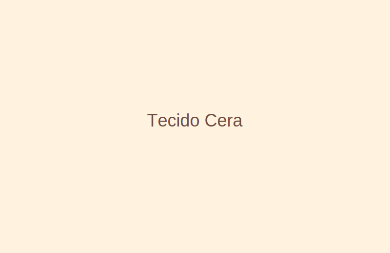
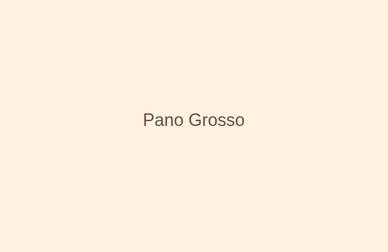
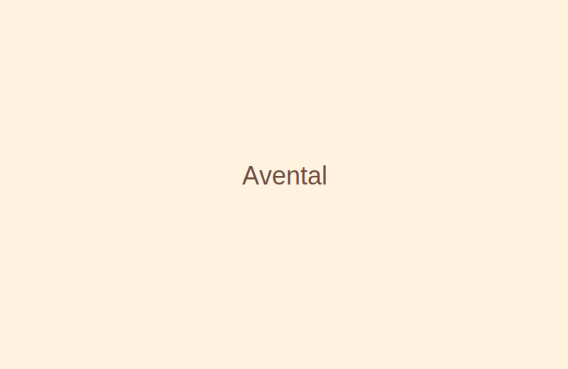
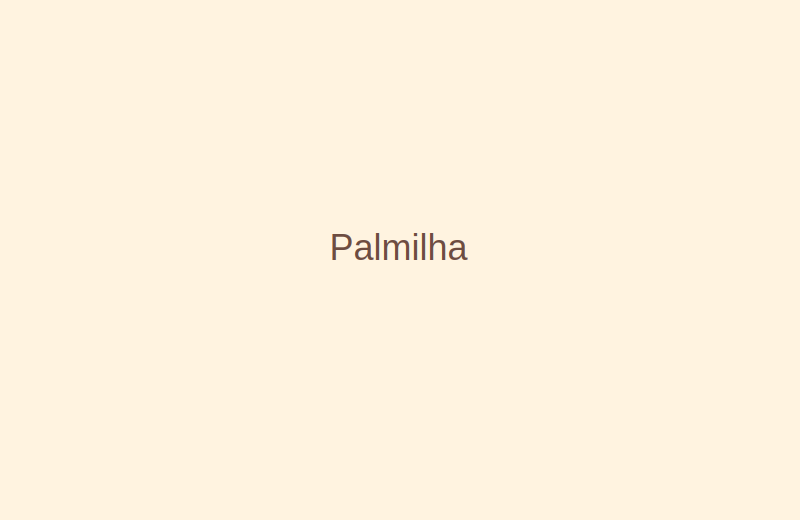
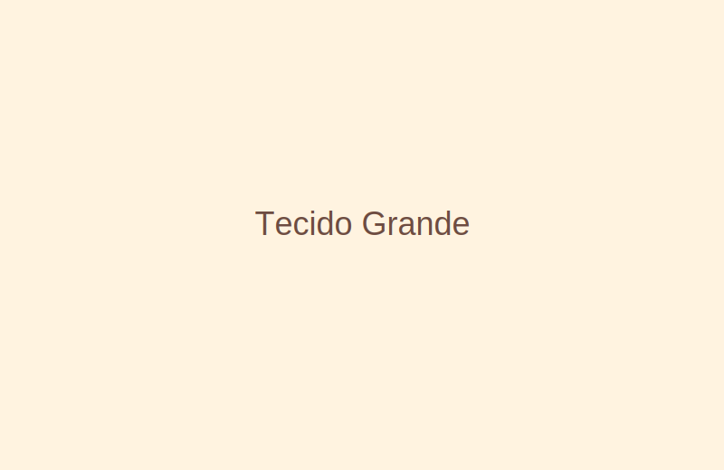

Bem-vindo à Papecera
Produtos sustentáveis feitos com cera de abelha. Nosso tecido é impermeável, antibactericida e reutilizável.
Produtos

Tecido de Cera (metro)
Tecido encerado ideal para proteger alimentos.

Pano Grosso - Apoio de Panela
Pano grosso em tecido de cera para apoio de panela.

Avental de Cera
Avental impermeável e resistente.

Palmilha Natural
Palmilha revestida com tecido de cera.
Tecido de Cera Médio
Tecido encerado médio.

Tecido de Cera Grande
Tecido encerado em metro para grandes projetos.
Sobre
Nossa empresa ajuda o planeta, porque os tecidos de cera reduzem o uso de plásticos descartáveis, são biodegradáveis e compostáveis. Vendemos tecidos de cera semelhantes ao papel, com mais durabilidade, impermeáveis e antibactericidas.
Contato
Email: contato@papecera-tecidos.com.br
Telefone: (11) 97049-480
Instagram: @papecera.oficial
Carrinho
- (vazio)